О нас
«Золотая рыбка» - магазин аквариумных рыбок и товаров для животныхКаталог товаров
Аквариумы и подставки
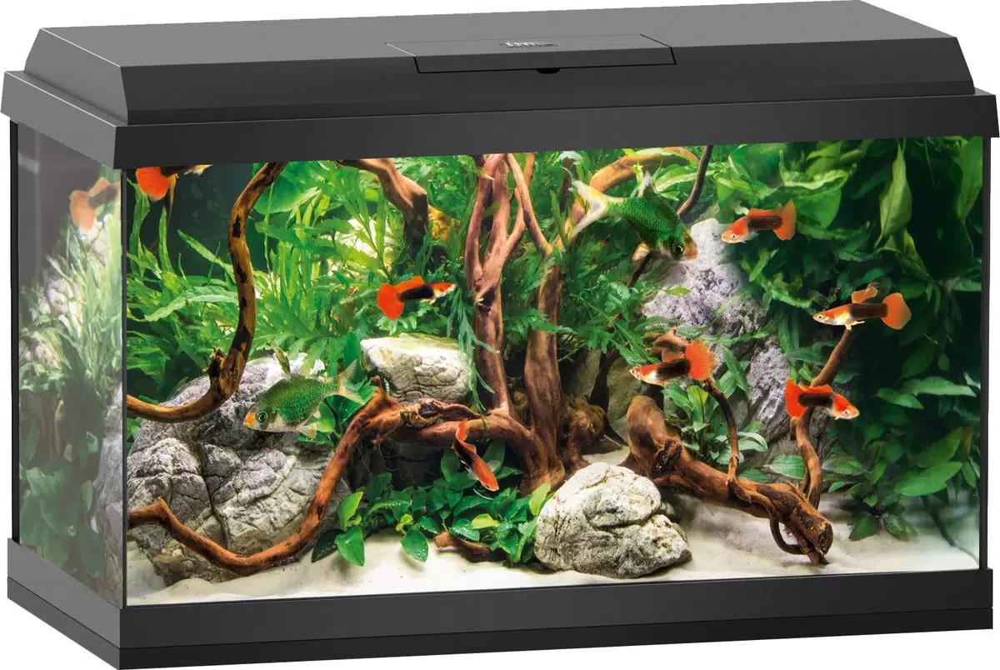
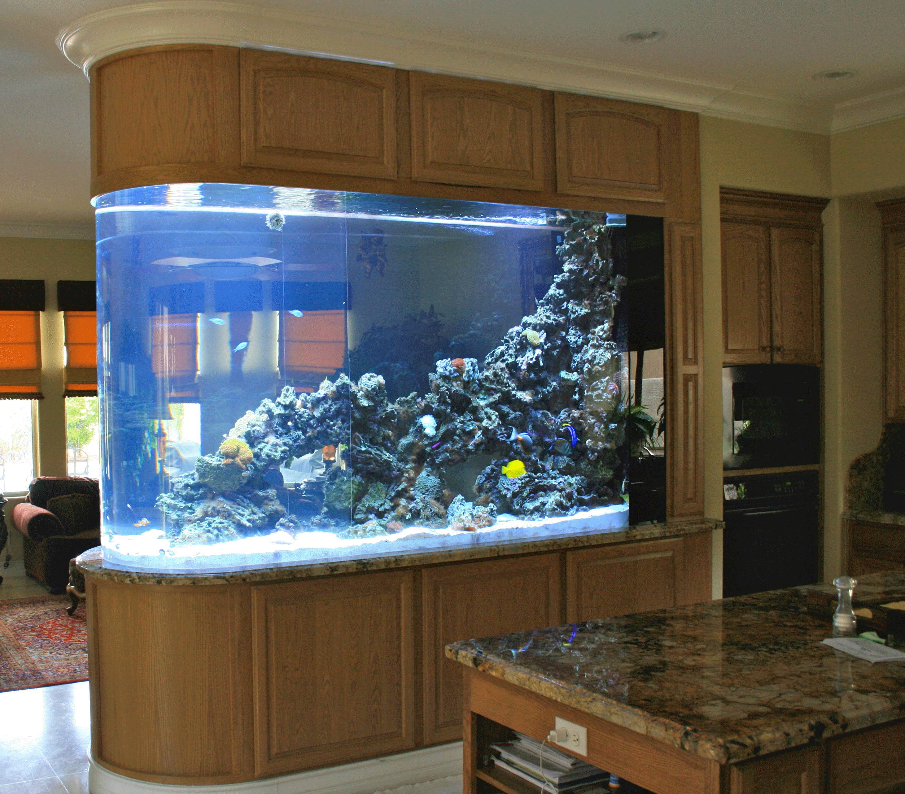
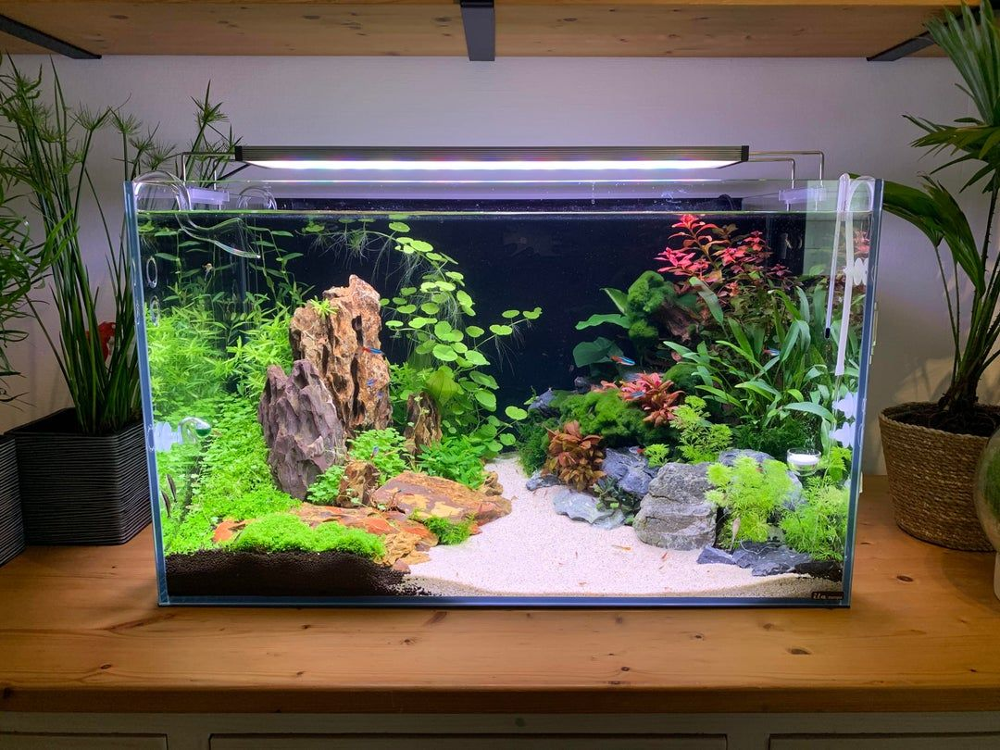
Аквариумные рыбки
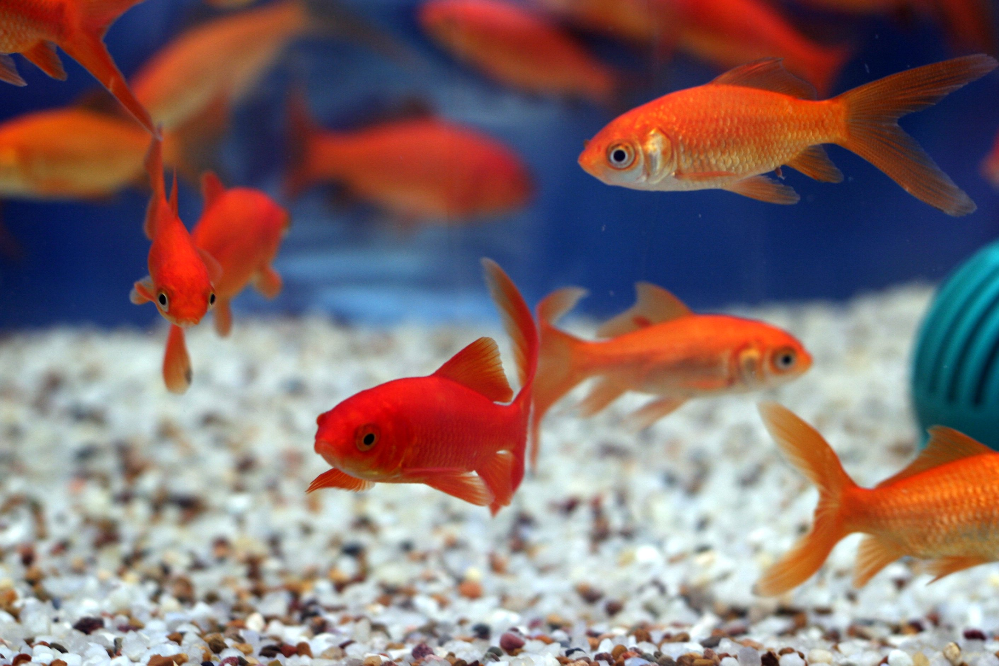
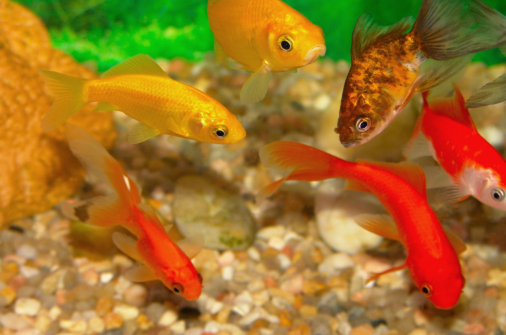
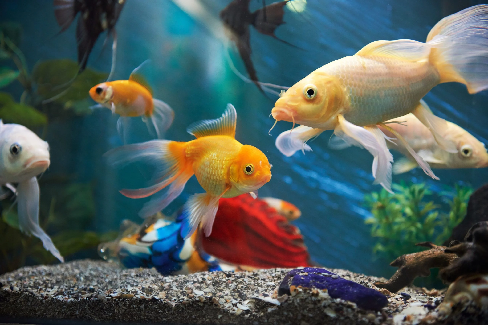
Корма и препараты
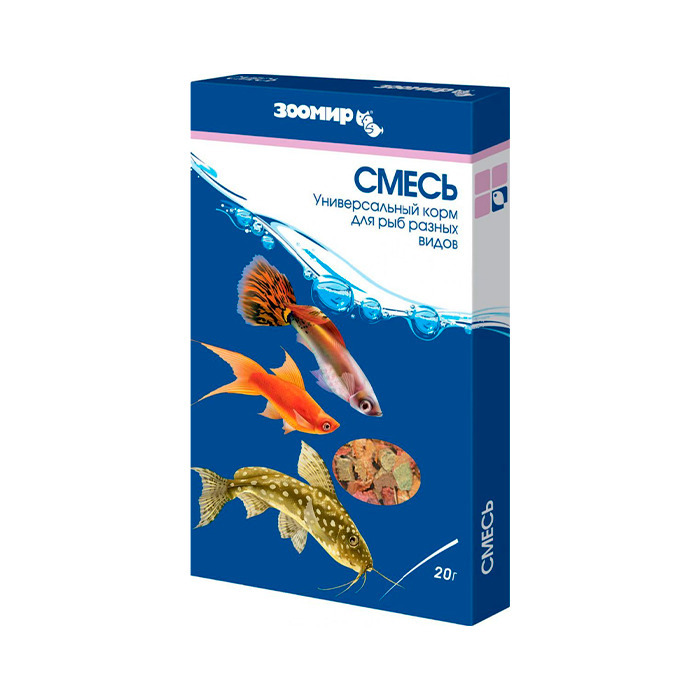
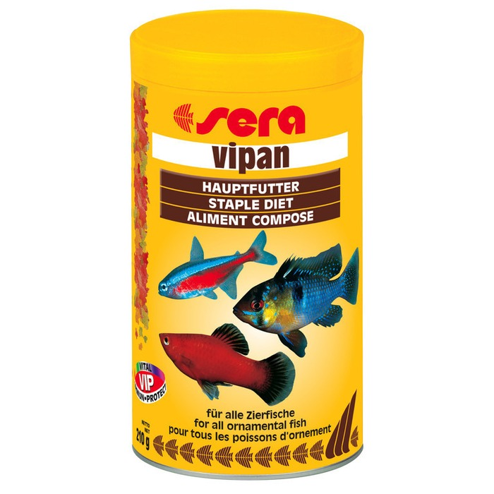
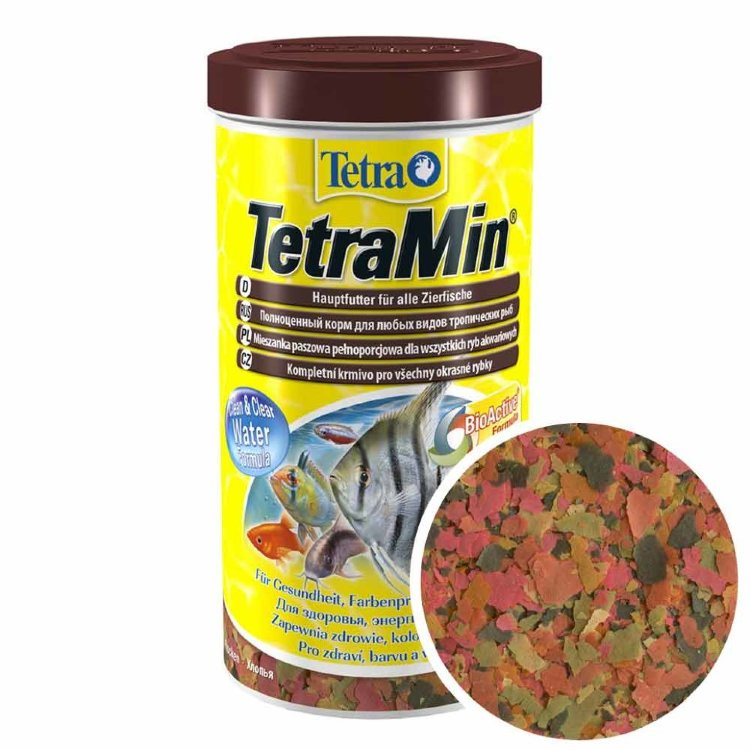
Оборудование и аксессуары
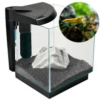
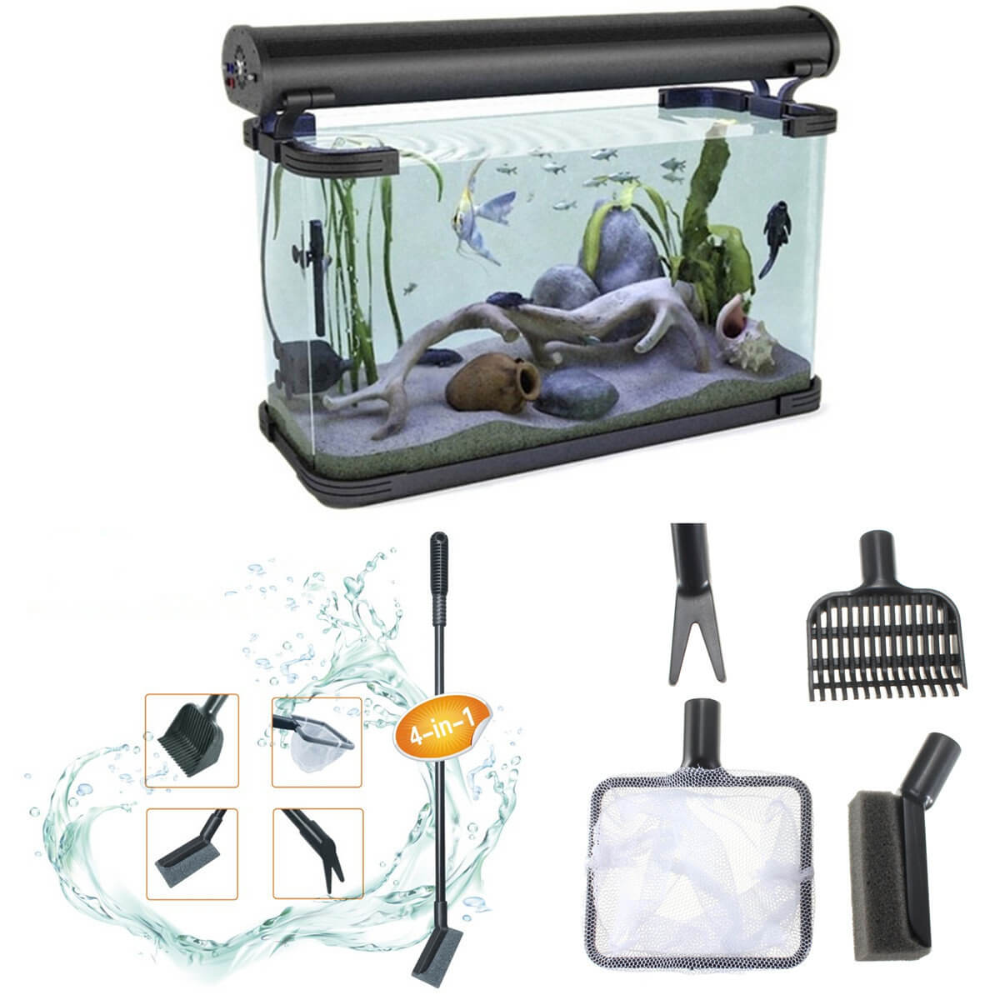
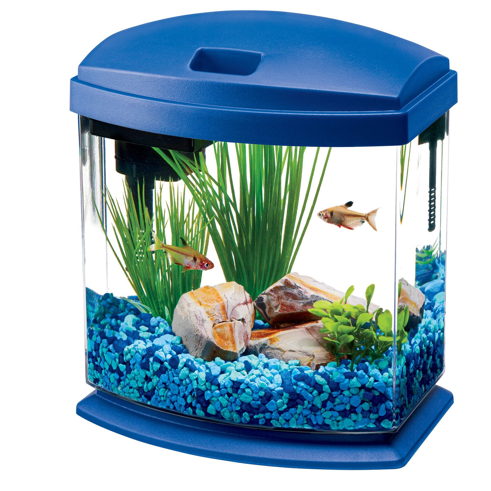
Статьи
Водоросли в аквариуме.
8 простых способов сделать аквариум красивым
Ошибки начинающих аквариумистов
Услуги
Быстрая доставка
Бережно доставляем товары по России
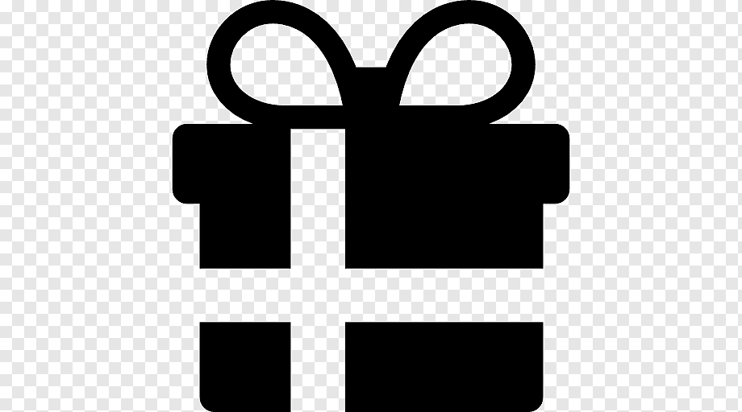
Бонусы за покупки
Дарим подарки и скидки до 70% всем покупателямГарантия качества
Соответствуем требованиям и стандартам качества
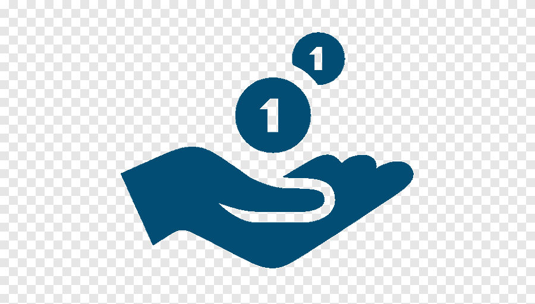
Доступные цены
Работаем напрямую с ведущими производителямиКонтакты
ежедневно, 10:00–20:00
бул. Новаторов, 71, Санкт-Петербург
тел.: +7(999)1234567
email: aqua@aqua.ru
бул. Новаторов, 71, Санкт-Петербург
тел.: +7(999)1234567
email: aqua@aqua.ru